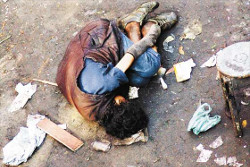

Uso indebido de drogas
El abuso de drogas y sustancias estupefacientes, por lo general desemboca en la dependencia de las mismas, lo que conlleva al malestar o deterioro (físico, psicológico o social).
Es imposible determinar o hacer referencia a una sola causa en particular en relación a la drogadicción. Si bien pueden haber similitudes entre un adicto y otro al momento de su vinculación con las drogas, no hay factores en común a todos.
Los factores varían dependiendo la persona, la historia de vida y el
contexto. Las causas que llevan a una persona a la necesidad constante
de consumo de una droga tienen raíces en diferentes planos de su vida
(personales, familiares, sociales, laborales u otros).
Sea cual sea la dependencia de un adicto, sea cual sea el tipo de sustancia que consume, existen tratamientos de recuperación.
En la mayoría de las ocasiones, la sustancia no es la raíz del problema, sino una grave consecuencia.
Según algunos estudios, el 70 por ciento de los adictos sufren algún tipo de patología mental asociada.
Aspectos relacionados con la drogodependencia
Intoxicación: Hace referencia a los cambios fisiológicos, psicológicos o comportamentales provocados por el consumo de una sustancia.
Tolerancia: Necesidad de aumentar la dosis para conseguir los efectos que antes se conseguían a dosis inferiores o bien disminución de los efectos producidos por la sustancia al utilizarla de forma frecuente.
Síndrome de abstinencia: Conjunto de reacciones físicas o corporales que ocurren cuando una persona dependiente de una sustancia deja de consumirla o reduce su consumo.
Sitio Web www.ona.gob.ve